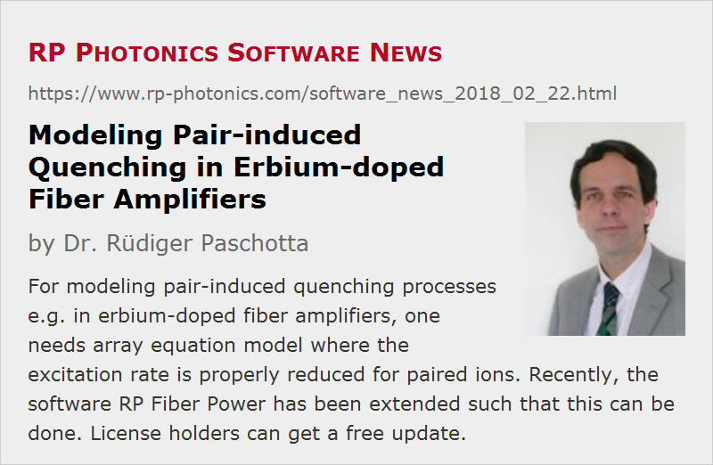

Modeling Pair-induced Quenching in Erbium-doped Fiber Amplifiers
Posted on 2018-02-22 in the RP Photonics Software News (available as e-mail newsletter!)
Permanent link: https://www.rp-photonics.com/software_news_2018_02_22.html
Author: Dr. Rüdiger Paschotta, RP Photonics Consulting GmbH
Abstract: For modeling pair-induced quenching processes e.g. in erbium-doped fiber amplifiers, one needs array equation model where the excitation rate is properly reduced for paired ions. Recently, the software RP Fiber Power has been extended such that this can be done. License holders can get a free update.

When modeling fiber amplifiers and lasers, one can often use a simple gain model with only a single metastable level. In some cases, however, one needs a more sophisticated model involving different excited states and transitions between them. Our simulation and design software RP Fiber Power offers a very flexible extended gain model, where you can essentially define your own level scheme and all the transition between those – even involving things like energy transfer processes between different ions.
Nevertheless, I recently found that there still was a limitation: one could not fully model quenching processes involving ion pairs or larger clusters of ions. Consider, for example, an erbium-doped fiber where some fraction of the erbium ions are located in pairs rather than being better distributed in the glass matrix. (Erbium-doped fibers have a higher tendency for clustering than e.g. Yb-doped fibers, even for moderate doping concentrations.) Due to their close proximity, ions in such pairs interact with each other quite strongly:
- If only one ion in such a pair is excited, that excitation can move between the two ions – which is so far not very relevant, since the excitation energy is not lost in that way.
- However, if another pump photon is then absorbed, we get an important new phenomenon. Only for short moment, we get two excited ions. Those then rapidly interact such that one them goes back to the ground state, transferring its energy to the other ion, which thus gets into a higher level – but it rapidly decays from there back to the original excited state. In the end, we have the same excitation state as initially despite the absorption of a pump photon. That waste of energy affects the amplifier performance.
Initially, I thought that we could already model such processes with our software, as you can define different species of ions (e.g. clustered and non-clustered erbium ions) as well as energy exchange processes. It turned out, however, that it did not yet work in the described example case – essentially, because the behavior of one ion then depends not just on the averaged excitation state of the other ions, but on the excitation state of its direct neighbor.
Fortunately, the problem could be solved with a relatively simple extension of the software. That was inspired by some scientific papers (for example: P. Myslinski et al., “Effects of concentration on the performance of erbium-doped fiber amplifiers”, IEEE J. Lightwave Technol. 15 (1), 112 (1997), doi:10.1109/50.552118). We needed a new type of optical transition, because the pump absorption transitions of clustered ions differ from those of ordinary ions in the following way: while the optical pump wave always “sees” an absorption proportional to the concentration of ions in the ground state, the rate of ion excitation is no longer proportional to that ground state concentration. This is because the excitation of those ion pairs where one ion is already excited is not increased further by an absorption process, as explained above. So what matters for the excitation rate is not the ground state population but rather the concentration of ions in totally non-excited pairs. For each additional excited paired ion, the number of those ions is reduced by 2 rather than 1.
In rate equation models, one just uses a correspondingly reduced transition rate. In our software, there was already the function def_stim() for defining an ordinary absorption transition. I now included a new function def_stim_cl() for defining an absorption transition of clustered ions, where the cluster size (e.g. 2 for ions pairs) is specified as an additional parameter and reduces the transition rate accordingly.
The following code demonstrates how easily one can now define such a gain model, where some fraction k_pairs of the erbium ions is located in ion pairs:
calc
begin
set_fiber(L_f, No_z_steps, '');
add_ring(r_co, (1 - k_pairs) * N_Er);
{ single Er ions, having levels 1 and 2: }
def_ion('Er', 1, 2);
def_spont(2, 1, 1 / tau_Er);
def_stim(1, 2, 's_a_Er');
def_stim(2, 1, 's_e_Er');
{ Er ions in pairs, having levels 3 and 4: }
def_ion('Ep', 3, 4);
set_N_dop(2, 0, 0, k_pairs * N_Er);
def_spont(4, 3, 1 / tau_Er);
def_stim_cl(3, 4, 's_a_Er', 2);
{ last parameter: cluster size = 2 for pairs }
def_stim(4, 3, 's_e_Er');
pump := addinputchannel(P_p_in, l_p, 'I_p', 0, forward);
signal := addinputchannel(P_s_in, l_s, 'I_s', 0, forward);
finish_fiber();
end
The same new function could be used for defining larger clusters. There is only the practical problems that when introducing several cluster sizes intermodal, the number of phenomenological parameters easily gets too high for conclusive comparisons of results with those from experiments. So one would often hope that there is just a moderate concentration of ion pairs, while larger clusters are negligible.
Customers having an RP Fiber Power license of any version (even a very old one) can now obtain an updated version of the software with the new feature – just request that via e-mail.
This article is a posting of the RP Photonics Software News, authored by Dr. Rüdiger Paschotta. You may link to this page, because its location is permanent.
Note that you can also receive the articles in the form of a newsletter or with an RSS feed.
|  |
If you like this article, share it with your friends and colleagues, e.g. via social media:
These sharing buttons are implemented in a privacy-friendly way!